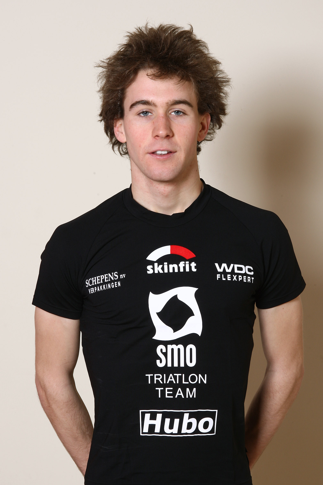

Vandermoere wint Onderdale Jogging
2009-12-01 · Nieuws · Gepubliceerd · Artikel 220

Hannes Vandermoere pakte zondag 29 november de winst in de Onderdale Jogging te Ursel. Hij legde de korte afstand (5km) af in 16'46". De volgende wedstrijd van dit regionale regelmatigheidscriterium staat gepland op 20 december.
Proficiat!